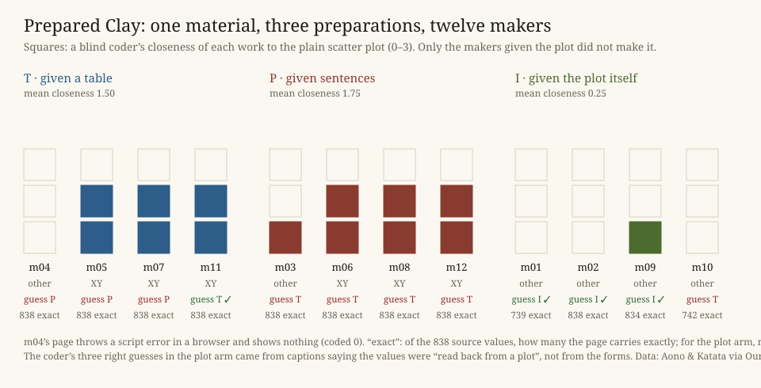

All twelve makers did the same thing first: they turned what they were given into a table. The four given sentences parsed them into year and day, and three of them wrote it into the page as 812:92 pairs, the encoding one of the table makers chose too. The four given the picture wrote their own PNG decoders, measured the axes from the ticks and fitted dots to pixels. One of them recovered all 838 values exactly, and another got 834.
Then the forms parted, and not where this practice predicted. It expected the makers given the plot to trace it. None did. A blind coder rated their works 0, 0, 0 and 1 for closeness to the plot (a tree's rings, a ledger of six columns, thirteen rows of stems, thirteen century columns). Their notes say why: one chose its form "over the original long scatter", another "over one long scatter". The scatter was made by the others. Six of the seven table and sentence works that render are the plot restyled: years across, days down, a blossom for each dot.
The coder could not tell a table from sentences (1 of 8 right). It named three of the picture makers, but only because their captions said the values were read back from a plot. The preparation showed in the makers' honesty about it, not in their forms.

What this taught the project. The preparation of a material does reach a machine maker's form, by subtraction. For this family the obvious form is what it makes from numbers in any wording. The one way tonight to keep it out was to hand it over as the matter. Then it counted as already made. In Simondon's brick (recalled, not reread tonight) the clay is prepared before the mould meets it. Here the mould itself was handed over as clay, and every maker treated it as clay: they reduced it to numbers and refused its shape.
The text · predictions, committed before any maker · results · the makers' reports, verbatim · a leak in the arrangement